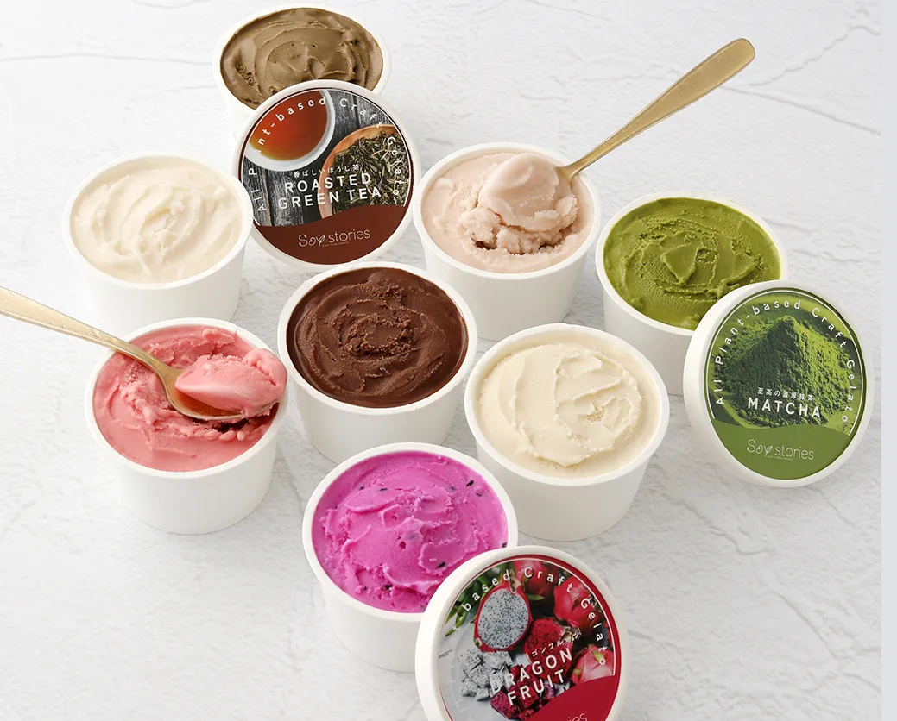

순두유 소프트아이스크림
착유 후 2일 이내의 규슈산 두유로 만듭니다. 말차, 볶은 콩가루(키나코), 호지차, 비건 초콜릿 소스, 흑당 시럽을 무료 토핑으로 제공합니다.
미디엄 ¥460 / 라지 ¥690
갓 구운 쌀가루 버블와플을 곁들인 와플 소프트는 미디엄 ¥690 / 라지 ¥900입니다.
후쿠오카 야쿠인의 SoyStories는 밀, 유제품, 달걀을 사용하지 않는 100% 식물성·글루텐프리 디저트 카페입니다. 순두유 소프트아이스크림과 쌀가루 젤라또를 매일 11:00–22:00에 즐길 수 있습니다.
착유 후 2일 이내의 규슈산 두유로 만듭니다. 말차, 볶은 콩가루(키나코), 호지차, 비건 초콜릿 소스, 흑당 시럽을 무료 토핑으로 제공합니다.
미디엄 ¥460 / 라지 ¥690
갓 구운 쌀가루 버블와플을 곁들인 와플 소프트는 미디엄 ¥690 / 라지 ¥900입니다.

매장 판매 8종 · 각 ¥490
일본산 쌀가루로 만든 비건 젤라또입니다. 아마자케(쌀 발효 음료)와 백미소를 활용한 맛부터 과일 맛까지 준비되어 있습니다.
대두와 견과류를 사용하지 않은 과일 맛 4종은 베리 믹스, 드래곤프루트, 상큼한 사과, 과즙 가득 복숭아입니다.
말차, 호지차, 바닐라 코코넛에는 대두가 들어갑니다. 멜팅 초콜릿에는 대두와 아몬드가 들어갑니다.
포장으로 4컵 이상 구매하시면 보냉백과 아이스팩을 무료로 드립니다.
| 구분 | 원재료 |
|---|---|
| 주방에 반입하지 않는 원재료 | 밀, 유제품, 달걀, 꿀, 젤라틴, 정제 백설탕은 주방에 반입하지 않습니다. |
| 같은 주방에서 취급하는 원재료 | 대두, 아몬드, 캐슈너트, 피스타치오, 마카다미아, 참깨, 마, 사과, 복숭아, 오렌지 |
| 순두유 소프트아이스크림 | 대두 |
| 베리 믹스 · 드래곤프루트 | 레시피상 29품목에 해당하는 원재료 없음 |
| 상큼한 사과 · 과즙 가득 복숭아 | 각각 사과와 복숭아 |
| 말차 · 호지차 · 바닐라 코코넛 | 대두 |
| 멜팅 초콜릿 | 대두, 아몬드 |
같은 주방에서 대두, 아몬드, 캐슈너트, 피스타치오, 마카다미아, 참깨, 마, 사과, 복숭아, 오렌지를 취급하므로 미량의 교차 접촉이 일어날 수 있습니다. 알레르기가 심한 분은 전체 메뉴의 29품목 알레르기 표와 FoodHug 원재료 안내를 확인하고 주문 전에 직원에게 문의해 주세요.
매일 11:00–22:00 영업하며, 마지막 주문은 21:45입니다.
하카타역에서 나나쿠마선으로 약 9분, 텐진미나미역에서는 약 4분이면 야쿠인오도리역에 도착합니다. 2번 출구에서 도보 2–3분입니다. 후쿠오카 공항에서는 공항선으로 하카타역까지 이동한 뒤 나나쿠마선으로 환승하세요. 지하철로 약 20–25분 걸립니다.
후쿠오카시 주오구 야쿠인 2-2-24, 치산 맨션 제3 하카타 1층에 있습니다. 여행용 캐리어와 유모차를 가지고 방문하실 수 있습니다.
엔화 현금, 주요 카드, Suica 등 교통카드, PayPay로 결제할 수 있습니다.
야쿠인의 SoyStories에서 밀, 유제품, 달걀을 사용하지 않은 순두유 소프트아이스크림과 쌀가루 젤라또 8종을 맛볼 수 있습니다.
베리 믹스, 드래곤프루트, 상큼한 사과, 과즙 가득 복숭아 4종입니다. 같은 주방에서 대두, 아몬드, 캐슈너트, 피스타치오, 마카다미아, 참깨, 마, 사과, 복숭아, 오렌지를 취급하므로 미량의 교차 접촉이 일어날 수 있습니다.
매일 11:00–22:00 영업하며, 마지막 주문은 21:45입니다.
하카타역에서 나나쿠마선으로 약 9분, 텐진미나미역에서는 약 4분이면 야쿠인오도리역에 도착합니다. 2번 출구에서 도보 2–3분입니다.
Show this screen to our staff at the counter
これをください